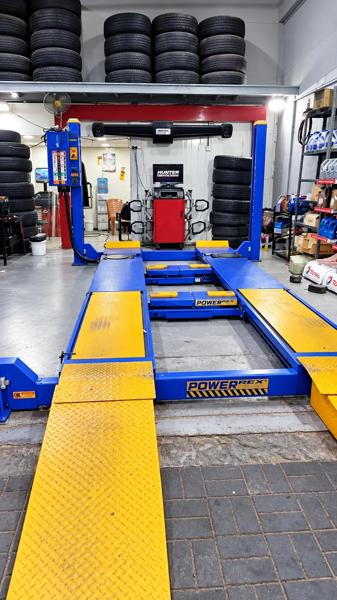
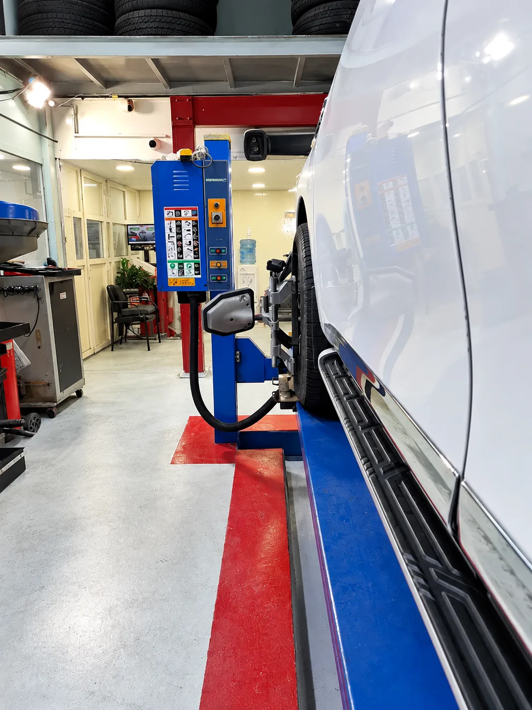

خدمات السيارات في البطين
خدمات السيارات والميزان الإلكتروني
ميزان إلكتروني، تغيير زيوت، إطارات وترصيص وخدمات سيارات أساسية في محطة البطين بالعين.
خدمة رئيسية داخل المحطة
الميزان الإلكتروني
نوفر خدمة فحص وضبط زوايا العجلات باستخدام معدات إلكترونية مخصصة داخل المحطة.


متى قد يكون فحص الميزان مفيداً؟
هذه علامات عامة قد تشير إلى الحاجة للفحص، وليست تشخيصاً ميكانيكياً بحد ذاتها.
01السيارة تسحب يمين أو يسار
02تآكل غير متساوٍ للإطارات
03المقود غير مستقيم أثناء القيادة
04بعد تغيير أو صيانة أجزاء مرتبطة بالعجلات

الصيانة الدورية
تغيير الزيوت
تتوفر في المحطة خدمة تغيير زيت السيارة ضمن قسم خدمات السيارات، إلى جانب منتجات مرتبطة بالصيانة الدورية.
الصور توضح منتجات موجودة وقت التصوير، وقد يختلف توفر المنتجات بمرور الوقت.

خدمات العجلات والإطارات
الإطارات وخدمات العجلات
الإطارات
ترصيص الإطارات
الميزان الإلكتروني
إصلاح البنشر
تتوفر هذه الخدمات ضمن قسم خدمات السيارات في نفس موقع المحطة.
خدمات إضافية موثقة
خدمات سيارات أساسية في نفس الموقع.
نعرض هنا فقط الخدمات التي تم توثيق توفرها ضمن المحطة.
البطاريات
الفرامل
كهرباء السيارات
غاز وتكييف السيارات
فحص الكمبيوتر
نيتروجين
إصلاح البنشر
إكسسوارات


المغسلة داخل المحطة
اكتشف خدمات الغسيل
وأثناء وجودك… اغسل سيارتك
المغسلة جزء من محطة البطين، مع غسيل يدوي من أربع مراحل.